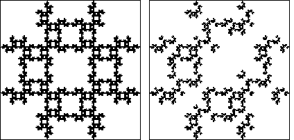

Recall property (v) of inversion:
inverting
In practice these combinations are removed from the limit set generating program to produce more efficient representations of the limit set.
However, inverting twice in the same circle cannot produce the kinds of problems resulting from the expansive nature of inverting inside to outside of a circle.Consequently, for driven IFS we do not forbid
For example,
on the left is the driven IFS with these forbidden combinations:
So any additional forbidden combinations (those in which we are interested) must be detected as pieces missing from this picture.
|  |
On the right is the driven IFS with the additional
forbidden combination
Consequently, our driven IFS will allow all combinations
Return to circle inversion driven IFS.